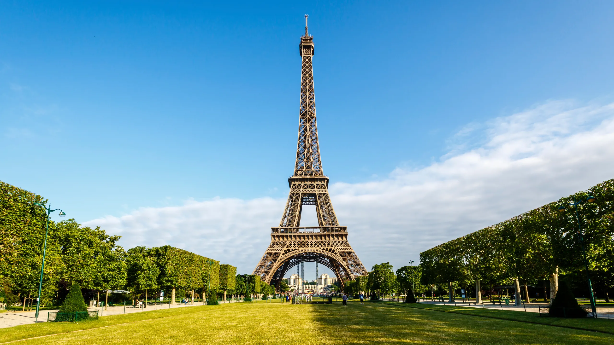

საფრანგეთი (ოფიციალური სახელწოდება: საფრანგეთის რესპუბლიკა) მდებარეობს დასავლეთ ევროპაში.
დედაქალაქი: პარიზი
ოფიციალური ენა: ფრანგული
ფართობი: დაახლოებით 643,801 კმ²
მოსახლეობა: 67 მილიონზე მეტი ადამიანი
ვალუტა: ევრო (€)
საფრანგეთი ესაზღვრება ბელგიას, ლუქსემბურგს, გერმანიას, შვეიცარიას, იტალიას, მონაკოს, ესპანეთს და ანდორას. ქვეყანა მოიცავს ალპებს, პირბურგოს, ლუარას ხეობებს და ატლანტის ოკეანესთან სანაპიროებს.
საფრანგეთი დიდი გავლენიანი ქვეყანაა ევროპაში. შუა საუკუნეებში საფრანგეთი ძლიერი სამეფო იყო, ხოლო 1789 წელს მოხდა საფრანგეთის რევოლუცია, რომელმაც მსოფლიოს პოლიტიკური ცვლილებები მოიტანა. თანამედროვე საფრანგეთი დემოკრატიული რესპუბლიკაა.
საფრანგეთი ძლიერი ეკონომიკის მქონე ქვეყანაა. წარმატებული ინდუსტრიები: მოდა, კოსმეტიკა, ტურიზმი, ავტომობილები (Renault, Peugeot), ღვინო და ძვირფასეულობა.
